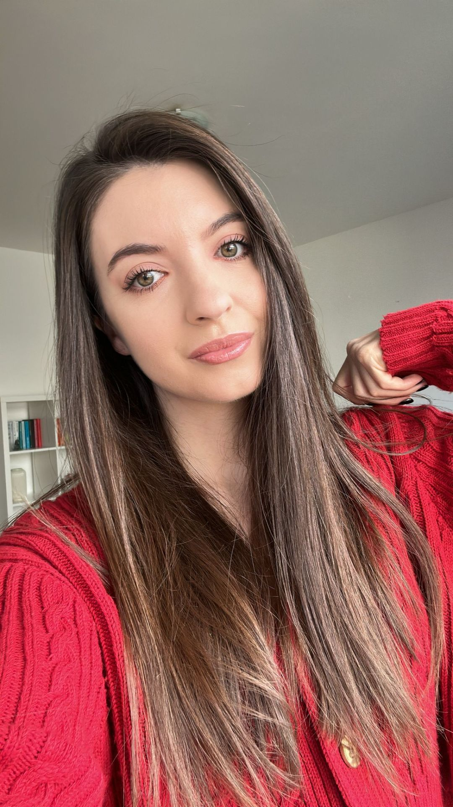

Andreea Mîrza

Summary
I have accumulated 4 years of experience in crafting exceptional web experiences. Proficient in Elementor, Webflow, and Figma, I possess strong expertise in team leadership, project planning, and client relations.
Education
Master's degree, E-Business, Babes-Bolyai University,
2018 - 2020
Work Experience
Team Leader Web Design Team | Marks & Metrics
May 2023- March 2024
With extensive experience in creating websites, I leverage my expertise to lead the web design team:
- Provide leadership, direction, and guidance to the web design team
- Assign tasks and projects to team members based on their skills and workload.
- Conduct regular team meetings to discuss project progress, issues, and goals.
- Set project timelines and milestones, and ensure they are met.
- Oversee the planning, execution, and delivery of web design projects.
- Maintain regular communication with clients to gather feedback, address concerns, and ensure project alignment with their expectations.
Web Designer | Marks & Metric
November 2020 - March 2024
At Marks & Metrics, my main responsibilities included:
- Creating mockups using Figma, with some examples showcased.
- Implementing websites in Wordpress, leveraging Elementor.
- Maintaining open communication with both team members and clients.
- Ensure that all web designs meet high-quality standards and adhere to best practices.
My Skills
- WordPress
- Webflow
- Elementor
- Web Development
- Figma (Software)
- Team Coordonation
- Client Relations
- Project Planning
Otther